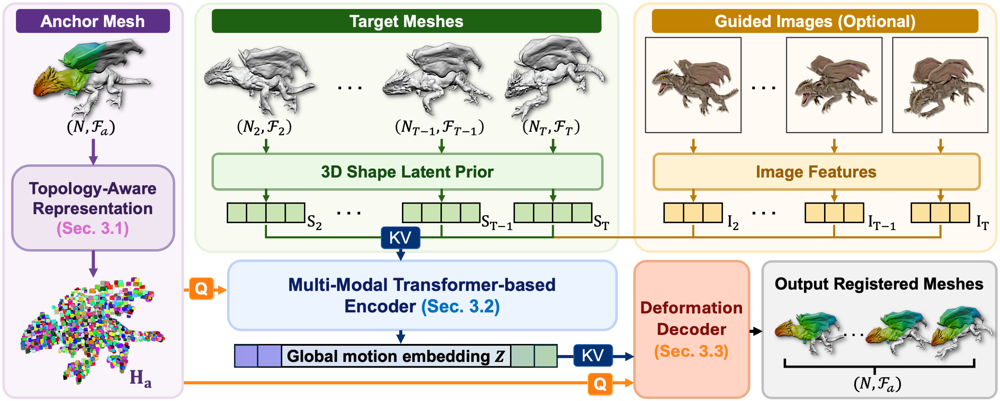

We present MeshLoom, a feed-forward registration network that directly reconstructs vertex deformations across mesh sequences. Our approach advances non-rigid registration beyond existing models, which are typically constrained by costly per-instance optimization, narrow object categories, pairwise-only inputs, or merely intermediate outputs. The network is simple and efficient, registering multiple meshes within seconds.
At its core lies a topology-aware encoder–decoder design. We first introduce a topology-aware point representation that encodes the anchor (reference) mesh's topology into its per-vertex features, disambiguating points that are Euclidean-close yet geodesically distant. We then propose a multi-modal encoder that fuses this anchor-mesh representation with complementary cues from each frame, such as shape latents and image features. These multi-source signals are compressed into a compact global motion embedding that captures dense inter-frame correspondence. A lightweight decoder then queries this global embedding with the anchor-mesh point representation, retrieving per-vertex deformations at target timestamps.
Through extensive experiments across diverse motions and object categories, we show that MeshLoom achieves state-of-the-art results on non-rigid registration. In addition, our global embedding-then-query paradigm naturally enables the network to generate deformations at intermediate timestamps, extending MeshLoom to motion interpolation and mesh morphing.
The six ideas that define MeshLoom.
Registers a full mesh sequence in seconds — no per-instance optimization, no iterative refinement.
Ingests an entire variable-length sequence in one pass, instead of stitching together pairwise source–target registrations.
Outputs explicit per-vertex displacements ready to use — no external solver, no post-processing step.
Bakes anchor-mesh connectivity into per-vertex features, so close-but-disjoint regions no longer move together.
Embed-then-query design lets the network deform the anchor at any timestamp — interpolation and morphing for free.
One model across humans, animals, and general objects — outperforming existing baselines.
Encode the anchor with its topology, fuse the sequence into one global motion embedding, then query that embedding per vertex per frame.

Workflow of MeshLoom. Given an input mesh sequence whose frames differ in vertex count and connectivity, our network proceeds in three steps. (1) Any frame (typically the first) is designated as the anchor mesh and embedded into a topology-aware representation Ha. (2) The remaining frames and their (optional) images are encoded into per-frame shape latents St and image features It, then fused with Ha by a transformer-based encoder to produce a global motion embedding Z. (3) A lightweight deformation decoder queries Z with Ha to predict per-vertex deformations of the anchor mesh at every frame, yielding an output sequence with a consistent vertex count and face connectivity.
Explore our registered mesh sequences interactively — rotate, zoom, and scrub through frames to inspect correspondence at any timestamp.
Side-by-side against six prior registration baselines on five sequences.
Registration across geometric variations, motion interpolation, and mesh morphing.
Fifteen diverse animation sequences spanning humans, animals, and general objects.
Side-by-side against prior registration baselines. All methods share the same anchor mesh (Frame 0).
Beyond standard registration, the embed-then-query design extends to motion interpolation and mesh morphing.
Generalizes across geometric variations — e.g., cross-species registration that closely conforms to the input shapes.
From sparse input motion states, synthesizes smooth intermediate frames that preserve object identity and local structure.
Smooth, coherent transitions between two distinct shapes — evidence that the encoder learns continuous deformation, not just frame replay.
Our registration results across fifteen diverse animation sequences.